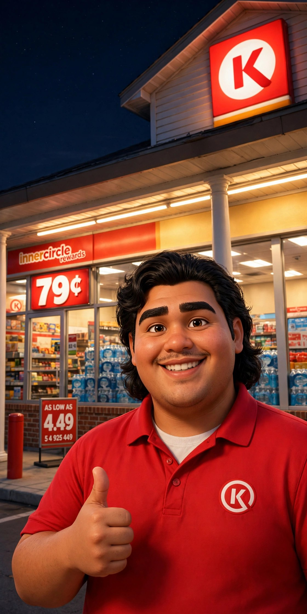

FOR WILL
Made for you, Will — press play, it’ll speak to you.
Tonight — a Film for Will
the place of honor — right up frontPsst — when you get home, open this on the biggest screen you’ve got. The film and the field fill the whole room.
![Jason in a green pasture at golden hour, wearing his faded blue Magic Basketball shirt, blue Orlando Magic cap and blue AND1 shorts, one hand resting on a tall wooden farm sign while sheep stream down the hill and gather around him. The board he is pointing at carries the whole display: the TruVINE emblem at its head — a green cross and leaves inside a blue triangle with a gold border — then Rounding Up the Flock: 841 in the flock, +193 this week, 38 countries gathering, 154,544 views, and John 10:16, ‘I have other sheep, which are not of this fold. I must bring them also, and they will hear my voice. They will become one flock with one shepherd.’ Below that, a Field Report strip: 376 videos telling the Word, 9,667 watched this week, 1,503 chapters — the whole Audio Bible, free. At the foot of the board, the Bible app’s wheel from its first week — 66 visitors: a green ring for the United States’ 65 and a thin gold sliver for Kenya’s 1 — with the line ‘the smallest seed stands at its true size,’ and beneath it: ‘We plant. We water. God gives the increase.’](scene-full-board.jpg)
Pinned to the Board
a place kept, not a claim madeFor our honored guest
The newest place on this board has a name on it — Will, from Circle K. The flock counted 841 tonight. This spot stays pinned up for you, friend — the door’s open whenever.

New Here? Tap One
plain words, no church-speak requiredWhat’s TruVINE?
TruVINE is Jason’s YouTube channel — Bible stories and whole chapters, told plain and warm, free for anybody to watch. It started small, the way a seed does, and the Lord has been growing it ever since. The numbers below are just the counting of it.
What’s the Bible app?
Word of God Risen is a free app Jason built so anybody can read the Bible — or simply listen to it read aloud in Grandpa Teddy’s voice. The whole Book is on it: all 1,503 chapters. No cost, no sign-up, nothing asked of you.
Why sheep?
Because that’s Jesus’ own picture for people He loves. He called Himself the Good Shepherd and said, “I have other sheep, which are not of this fold. I must bring them also, and they will hear my voice. They will become one flock with one shepherd” (John 10:16). And in Luke 15, the shepherd leaves the ninety-nine to go after the one who’s lost — because around here, every single sheep gets special treatment. That’s why this page was made for one man, by name.
The YouTube Channel
TruVINE — Bible stories, told for anybodyHere is what the numbers mean, plain and simple:
Times somebody pressed play and sat down to watch.
People who asked to keep hearing — the ones who come back.
Stories and chapters from the Bible — every one free to watch.
People in 38 countries have watched
Every country counted — big or small, nobody left off the list:
Bars are drawn on a square-root scale, so the smallest seeds can be seen at all — the order is the true order and every number is the exact count. Counted October 15, 2026, from YouTube’s own numbers — the channel’s whole recorded history (January 1, 2024 – October 13, 2026). Of 156,281 views in that time, YouTube could name a country for 107,984; the rest came with none attached — and this page does not guess at them.
Word of God Risen
read it or hear it — free for anybodyThe app’s first counted week — October 7–14, 2026. Most visitors arrived from the YouTube channel.
Where the visitors came from
One reader is still a planting — the smallest seed is drawn at its true size.
Where they stopped longest
The pages people opened most, that same week:
- The Front Door32
- The Parables11
- Matthew, chapter 17
- Genesis6
The app began counting its own reading on October 15, 2026.
Since then: 8 chapters read · 7 chapters heard · 5 listens finished.
Florida lit today — 3 chapters read and 3 heard there.
Small because it is new. It grows from here.
The Bible App, Today — Right Now
counts itself, liveThis strip is live: the Bible app counts itself as the Word is opened, and no hand touches the tally. YouTube’s figures elsewhere on this page can’t do that — YouTube settles its numbers a day or two later — so they carry their count dates instead. Live where it can be, dated where it must be: that’s the honesty of this page.
All the Doors, in One Place
every one of them opensTell Jason
he reads every word himselfGot an idea for a game that would honor God? A thought for the flock, or something on your heart? Write it here — your note opens in your own mail app, addressed straight to Jason. He reads every word himself. Nothing is stored on this website — it travels like a letter, from your hands to his.
FOR WILL
This is special for you, Will. It means a lot to me that you take time out of your night to talk with me about things like this — to look at my YouTube channel and talk about my Bible app — and that you appreciate my faith and everything. I want you to know how much appreciation I have for you, and for your encouragement.
Every single sheep in this flock gets special treatment — that’s the Shepherd’s way. (Luke 15)
— Jason, from your Circle K